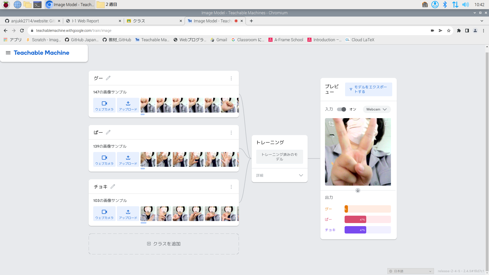
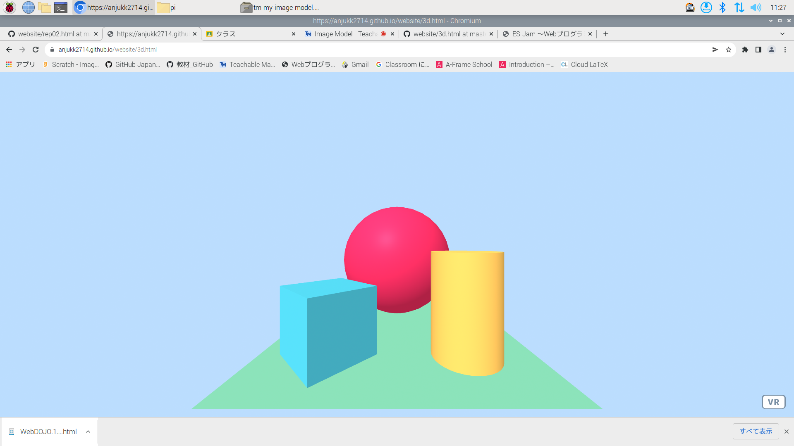

第2週目
2-1 レポートをHTMLで作る
１週目のレポート
1.内容
1週目で行った内容についてレポートにまとめる
2.感想
前回の段階で行っていたためそんなに苦戦はしなかった。
2-2 機械学習体験

1.内容
tmをつかって、機械学習を体験する。
2.感想
今まで、人工知能や、それに関係する言葉は聞いたことがあったが、あまり詳しく理解していなかったので、今回の体験を通して、わかりやすく理解ができたと思う。
2-3 JavaScript体験：３次元モデルのプログラムを作る

３次元モデル
1.内容
プログラミング道場にコピーしたプログラミングを使い、3dモデルを作る。
2.感想
プログラミング用語などはわからないが、先生の説明がわかりやすく、結構できたと思う。